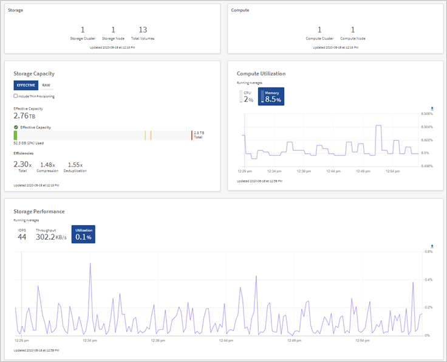
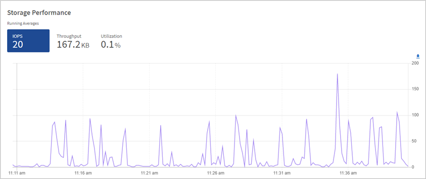
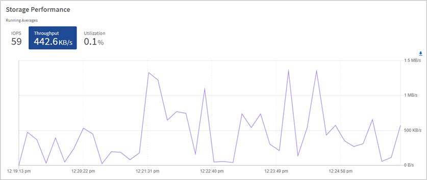
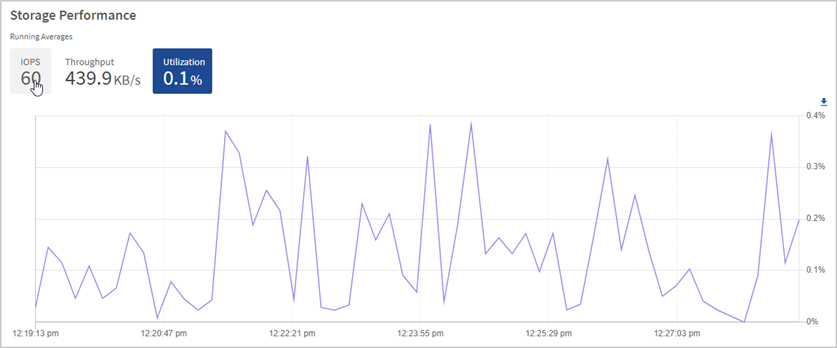
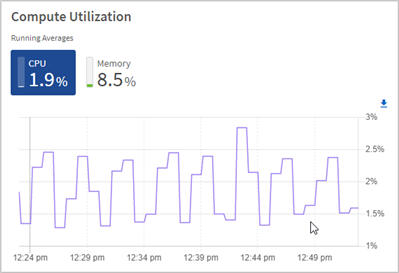

Monitor storage and compute resources on the Hybrid Cloud Control Dashboard
Contributors
 Download PDF of this page
Download PDF of this page
With the NetApp Hybrid Cloud Control Dashboard, you can view all your storage and compute resources at a glance. Additionally, you can monitor storage capacity, storage performance, and compute utilization.
Only compute nodes that are managed and clusters with at least one managed node in H-series hardware appear on the Hybrid Cloud Control Dashboard.
Access the NetApp HCC Dashboard
-
Open a web browser and browse to the IP address of the management node. For example:
https://[management node IP address]
-
Log in to NetApp Hybrid Cloud Control by providing the NetApp HCI storage cluster administrator credentials.
-
View the Hybrid Cloud Control Dashboard.

| You might see some or all these panes, depending on your installation. For example, for storage-only installations, the Hybrid Cloud Control Dashboard shows only the Storage pane, the Storage Capacity pane, and the Storage Performance pane. |
Monitor storage resources
Use the Storage pane to see your total storage environment. You can monitor the number of storage clusters, storage nodes, and total volumes.
Monitor compute resources
Use the Compute pane to see your total NetApp H-series compute environment. You can monitor the number of compute clusters and total compute nodes.
Monitor storage capacity
Monitoring the storage capacity of your environment is critical. Using the Storage Capacity pane, you can determine your storage capacity efficiency gains with or without compression, deduplication, and thin provisioning features enabled.
You can see the total physical storage space available in your cluster on the RAW tab, and information about the provisioned storage on the EFFECTIVE tab.
| To view cluster health, also look at the SolidFire Active IQ Dashboard. See Monitor performance, capacity, and cluster health in NetApp SolidFire Active IQ. |
-
Click the RAW tab, to see the total physical storage space used and available in your cluster.
Look at the vertical lines to determine whether your used capacity is less than the total or less than Warning, Error, or Critical thresholds. Hover over the lines to see details.
You can set the threshold for Warning, which defaults to 3% below the Error threshold. The Error and Critical thresholds are preset and not configurable by design. The Error threshold indicates that less than one node of capacity remains in the cluster. For steps on setting the threshold, see Setting cluster full threshold. For details about the related cluster thresholds Element API, see “getClusterFullThreshold” in the Element API Guide. To view details about block and metadata capacity, see Understanding cluster fullness levels in the Element User Guide. -
Click the EFFECTIVE tab, to see information about total storage provisioned to connected hosts and to see efficiency ratings.
-
Optionally, check Include Thin Provisioning to see thin provisioning efficiency rates in the Effective Capacity bar chart.
-
Effective Capacity bar chart: Look at the vertical lines to determine whether your used capacity is less than the total or less than Warning, Error, or Critical thresholds. Similar to the Raw tab, you can hover over the vertical lines to see details.
-
Efficiencies: Look at these ratings to determine your storage capacity efficiency gains with compression, deduplication, and thin provisioning features enabled. For example, if compression shows as “1.3x”, this means that storage efficiency with compression enabled is 1.3 times more efficient than without it.
Total Efficiencies equals (maxUsedSpace * efficiency factor) / 2, where efficiencyFactor = (thinProvisioningFactor * deDuplicationFactor * compressionFactor). When Thin Provisioning is unchecked, it is not included in the Total Efficiency. -
If the effective storage capacity nears an Error or Critical threshold, consider clearing the data on your system. Alternatively, consider expanding your system.
See Expansion overview.
-
-
For further analysis and historical context, look at NetApp SolidFire Active IQ details.
Monitor storage performance
You can look at how much IOPS or throughput you can get out of a cluster without surpassing the useful performance of that resource by using the Storage Performance pane. Storage performance is the point at which you get the maximum utilization before latency becomes an issue.
The Storage Performance pane helps you identify whether the performance is reaching the point where the performance might degrade if the workloads increase.
The information on this pane refreshes every 10 seconds and shows an average of all the points on the graph.
For details about the associated Element API method, see the GetClusterStats method in the Element API Reference Guide.
-
View the Storage Performance pane. For details, hover over points in the graph.
-
IOPS tab: See the current operations per second. Look for trends in data or spikes. For example, if you see that the maximum IOPS is 160K and 100K of that is free or available IOPS, you might consider adding more workloads to this cluster. On the other hand, if you see that only 140K is available, you might consider offloading workloads or expanding your system.
 -
Throughput tab: Monitor patterns or spikes in throughput. Also monitor for continuously high throughput values, which might indicate that you are nearing the maximum useful performance of the resource.
 -
Utilization tab: Monitor the utilization of IOPS in relation to the total IOPS available summed up at the cluster level.

-
-
For further analysis, look at storage performance by using the NetApp Element Plug-in for vCenter Server.
Monitor compute utilization
In addition to monitoring IOPS and throughput of your storage resources, you also might want to view the CPU and memory usage of your compute assets. The total IOPS that a node can provide is based on the physical characteristics of the node, for example, the number of CPUs, the CPU speed, and the amount of RAM.
-
View the Compute Utilization pane. Using both the CPU and Memory tabs, look for patterns or spikes in utilization. Also look for continuously high usage, indicating that you might be nearing the maximum utilization for the compute clusters.
This pane shows data only for those compute clusters managed by this installation. -
CPU tab: See the current average of CPU utilization on the compute cluster.
-
Memory tab: See the current average memory usage on the compute cluster.
-
-
For further analysis on compute information, look at these resources:
 Edit on GitHub
Edit on GitHub